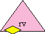

| |
CapTP: |
||||||
Overview
| The Four Tables | The "data structure" defining the semantics of the 2-vat CatTP protocol |
| Resolving RemotePromises | Explains the automatically generated whenMoreResolved messages, and how they resolve remote unresolved references (RemotePromises). |
| Three-Vat Granovetter Introduction | What happens when Alice, Bob, and Carol are in three separate vats? |
| Distributed Acyclic Garbage Collection | How we collect what distributed garbage we can. |
| Preparing for the Pervasive Possibility of Partition | Cleaning up after the show's over. |
| Protocol Parameter Types | Defines the types used in the protocol declarations below. |
| Surface Syntax Negotiation |
This stuff will actually be encoded on the wire according to the XML-compatible Doc and WOS standards. |
| And for something completely different... | |
| Unibus Protocol Sketch | Demonstrates that a protocol with the distributed capability security properties of Pluribus (VatTP + CapTP) can be built purely out of single key cryptography, with no public keys up my sleeve. |
| See also | |
| A presentation on CapTP given to the OMG. | A good overview of the rationale and features of CapTP. |
The Operations
These are the "messages" that one inter-vat connection handler (shown as large grey rounded rectanges in The Four Tables) sends to another. The terminology is all from the receiver's point of view, trying to make it clear how the receiver is supposed to react. Unfortunately, we also need to understand why the sender would be sending these messages, but we can't have our terminology both ways.
If you think of these like instructions, it will be clear why we can more clearly define the semantics by taking the receiver's point of view. Contrast defining the semantics of instructions by defining what the machine (the receiver) must do in response vs defining the instructions by stating when some idealized compiler (the sender) must emit which. The latter would be a nightmare. Also, as with instructions, the sending side properly has wiggle room that the receiver does not in deciding how to use the protocol while staying within the semantics.
An index or position parameter in italics below indicates a place that is assumed or required to be unoccupied before this operation is received, in which case this operation should cause it to become occupied. An index or position parameter not in italics is assumed or required to be occupied unless stated otherwise in the text.
|
Message Passing
|
||
|---|---|---|
DeliverOnlyOp(recipPos :IncomingPos, verb :MsgName, args :any[]) |
Queue a delivery of verb(args..) to recip, discarding the outcome. recip <- verb(args..); null |
|
DeliverOp(answerPos :AnswerPos, rdr :OneArgFunc, recipPos :IncomingPos, verb :MsgName, args :any[]) |
Queue a delivery of verb(args..) to recip, binding answer/rdr to the outcome. answer := recip <- verb(args..) answer <- whenMoreResolved(rdr) |
|
|
Distributed Acyclic Garbage Collection
|
||
GCExportOp(exportPos :ExportPos, wireDelta :WireDelta) |
This many exportings are accounted for. | |
GCAnswerOp(answerPos :AnswerPos) |
Drop answer-map entry. | |
|
Connection Management
|
||
ShutdownOp(receivedCount :MsgCount) |
Initiate attempt to close the connection. | |
TerminatedOp(problem :Throwable) |
The connection was terminated because of the problem. | |
WormholeOp(packets :byte[], source :VatID, dest :VatID) |
Not yet implemented, but needed to fix the Lost Resolution Bug. | |
The Descriptors
The descriptors serialized as the encoding of various other objects that are not to be passed by copy (or by construction). Once again, the names are purely from the point of view the the unserializing side.
NewFarDesc(importPos :ImportPos, swissHash :SwissHash) |
An exported PassByProxy become a new imported Far reference | |
NewRemotePromiseDesc(importPos :ImportPos, rdrPos :AnswerPos, rdrBase :SwissBase) |
An exported LocalPromise becomes a new imported RemotePromise with a shortening rdr in the Answers table. |
|
|
or |
ImportDesc(importPos :ImportPos) |
An already allocated import (Far reference or RemotePromise) wireCount[importPos] += 1 |
IncomingDesc(incomingPos :IncomingPos) |
An outgoing reference encoded towards home becomes an already allocated export or answer. | |
|  |
Promise3Desc(searchPath :String[], hostID :VatID, nonce :Nonce, vine :Vine) |
A RemotePromise encoded towards a foreign vat is decoded by looking up the nonce in the host vat. |
Far3Desc(searchPath :String[], hostID :VatID, nonce :Nonce, swissHash :SwissHash), vine :Vine) |
A Far reference encoded towards a foreign vat is decoded by looking up the nonce and swissHash in the host vat. *** Doesn't work until the WormholeOp is implemented. Until then, use the Promise3Desc. |
|
LocatorUnumDesc() |
A encoded sender-local presence on the LocatorUnum decodes into a receiver-local presence of the LocatorUnum. |
Helper Objects
Those shown with a "parameter" list are serialized as shown.
RemoteDelivery(recip :any, verb :String args :any[]) |
The serialized form of a normal PassByConstruction object. Unserializes into recip <- verb(args...) |
|
RemoteCall(recip :any, verb :String args :any[]) |
The serialized form of a system PassByConstruction object. Unserializes into recip.verb(args...) |
|
SturdyRef(locator :LocatorUnum, searchPath :String[], hostID :VatID, swissNum :SwissNumber, expiration :UInt63) |
Like a "cap:..." URI, but opaque to support distributed confinement. | |
Vine |
Solves race conditions in live 3-vat introductions. | |
NonceLocator |
Automatically registered at incoming position 0 to receive lookup messages. Specific to one side of one inter-vat connection. | |
LocatorUnum(serialized using the LocatorUnumDesc) |
Pervasive presences of the object finding service |
Helper Messages
These are messages that are sent inter-vat as part of the protocol. With the exception of whenMoreResolved and whenBroken, these messages are conveyed by the above mechanisms just as are any user-defined messages.
| Universal Messages (defaults to Miranda
Methods) |
||
|---|---|---|
any <- __whenMoreResolved(observer :OneArgFunc) :void |
Informs the observer when the reference becomes more resolved. |
|
any <- __whenBroken(observer :OneArgFunc) :void |
Informs the observer when the reference becomes broken. |
|
any <- __reactToLostClient(problem :Throwable) :void |
Informs an object that a partition may be preventing one of its clients from reaching it. | |
| NonceLocator Messages |
||
NonceLocator <- provideFor(gift :any, recipID :VatID, nonce :Nonce) :Vine |
VatA (the donor) deposits a reference to (gift <- yourself()) at nonce in VatC's (the host's) from-VatA-for-VatB table, and returns a Vine for the gift-entry. |
|
NonceLocator <- provideFor(gift :any, recipID :VatID, nonce :Nonce, swissHash :SwissHash) :Vine |
VatA (the donor) deposits a reference to gift at [nonce, swissHash] in VatC's (the host's) from-VatA-for-VatB table, and returns a Vine for the gift-entry. *** Doesn't work until the WormholeOp is implemented. Until then, use the above provideFor without the swissHash. |
|
NonceLocator <- acceptFrom(donorPath :String[], donorID :VatID, nonce :Nonce, vine :Vine) :any |
VatB picks up the reference to Carol deposited by VatA at nonce in VatC's from-VatA-for-VatB table. |
|
NonceLocator <- acceptFrom(donorPath :String[], donorID :VatID, nonce :Nonce, swissHash :SwissHash), vine :Vine) :any |
VatB picks up the reference to Carol deposited by VatA at [nonce, swissHash] in VatC's from-VatA-for-VatB table. *** Doesn't work until the WormholeOp is implemented. Until then, use the above acceptFrom without the swissHash. |
|
NonceLocator <- ignore(vine :Vine) :void |
The message holds the vine until it gets delivered and ignored. | |
NonceLocator <- lookupSwiss(swissNum :SwissNumber, vine :Vine) :any |
A message sent to a NonceLocator to dereference a SturdyRef hosted by the NonceLocator's vat. | |
Unless stated otherwise, all text on this page which is either unattributed or by Mark S. Miller is hereby placed in the public domain.
| |
|
report bug (including invalid html)
|
||||||||